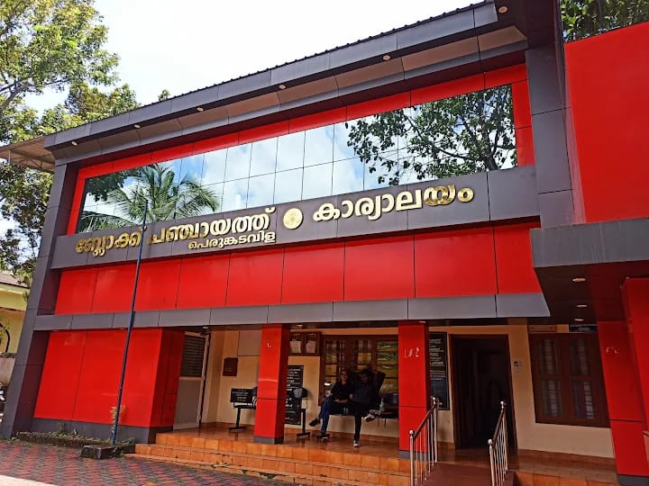
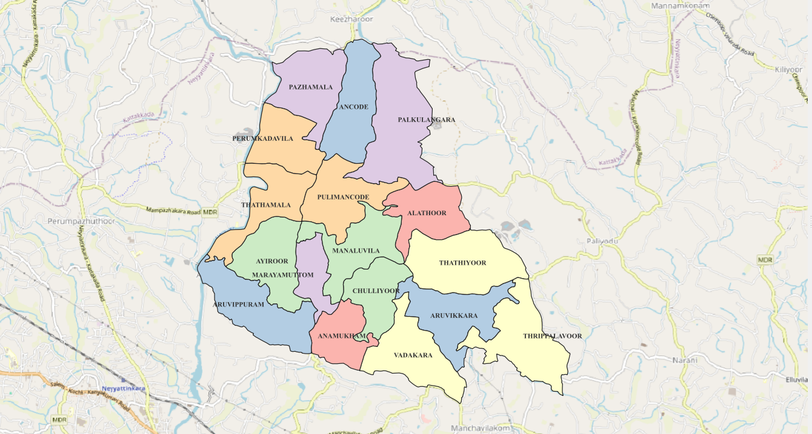

Perumkadavila Grama Panchayath
Local Governance | Public Services | Sustainable Development
PANCHAYAT INFORMATION PORTALWelcome to our local community
Discover Perumkadavila
Explore information about Perumkadavila Grama Panchayath, public services, community development and environmental initiatives through this informational website.
Find useful government links and explore the Panchayath boundary and interactive geographical resource map.
Explore the Website Open Resource Map
Perumkadavila Grama Panchayath
About the Panchayat
About Our Panchayat
Understanding local governance and community development.
Perumkadavila Grama Panchayath is a local self-government institution in Kerala. Grama Panchayats play an important role in addressing local needs, supporting community development and facilitating civic services.
Local governance encourages public participation in development planning and helps identify community priorities. Residents can contribute by staying informed, participating in local activities and using appropriate official channels for public services.
This website brings together general information, government service links and geographical resources relating to Perumkadavila.
Useful Government Links
Public Services
Access relevant Kerala Government and Local Self Government Department websites through the links below.
Citizen Services
Explore online citizen services available through the Kerala Local Self Government Department.
Visit Citizen Portal →Property Tax
Visit the relevant portal to check property-tax information and available online facilities.
Visit Tax Portal →Local Self Government
Find information and updates from Kerala's Local Self Government Department.
Visit LSGD Website →Kerala Government
Access the Kerala Government's official website for public information and government updates.
Visit Government Website →Community and Sustainability
Development and Environment
Key themes that support sustainable local development and a healthy community.
Infrastructure
Roads, public facilities and drainage infrastructure contribute to accessibility, safety and everyday needs.
Waste Management
Waste segregation, recycling and responsible disposal help reduce pollution and maintain cleaner surroundings.
Water and Drainage
Protecting water resources and maintaining drainage channels can support environmental health and reduce local flood risks.
Community Participation
Public meetings, community programmes and environmental awareness can help residents participate in development.
Geographical Information
Location and Boundary Map
View the geographical boundary map associated with Perumkadavila Grama Panchayat.

Explore the Geography
Interactive Resource Map
Explore the online WebGIS map created for Perumkadavila Grama Panchayat.
Perumkadavila WebGIS
Open the interactive map to explore geographical features and local resources represented in the WebGIS project.
Explore Interactive Resource Map →Get in Touch
Contact Information
Refer to the contact details below for general Panchayat-related enquiries.
Office Details
Office:
Perumkadavila Grama Panchayat
Address:
Perumkadavila Grama Panchayat Office,
Perumkadavila P.O., Neyyattinkara,
Thiruvananthapuram, Kerala, India – PIN 695124
Contact Channels
Phone:
9496040630
Email:
nregapkvila@gmail.com
Official Information:
Kerala Local Self Government Department →